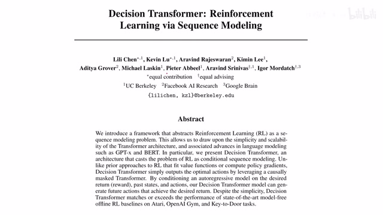
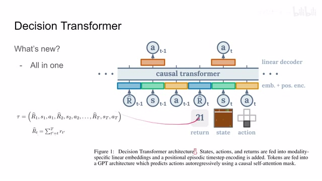
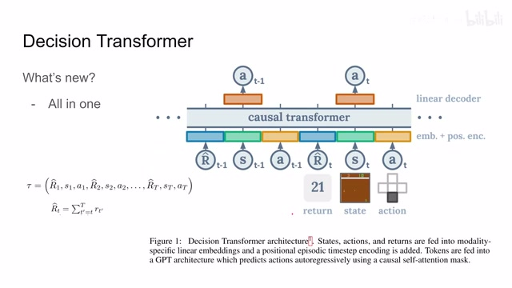
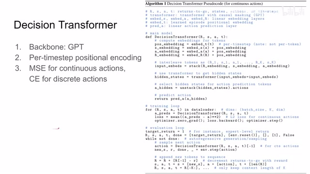
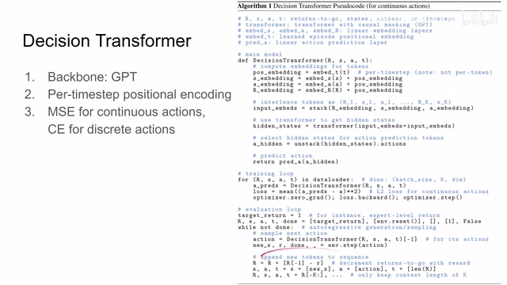
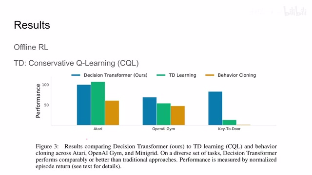
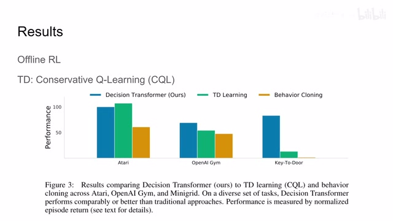

← 返回阅读库 · 原论文目录
论文讲解阅读文档 · 机器人学 · v129
Decision Transformer RL via Sequence Modeling[2106.01345]
视频时长 00:05:10；讲解文字 2,604 字符；提取讲解画面 8 张。按视频原顺序阅读，每段文字保留时间戳。
文字来自整段视频的自动语音转写，按自然停顿分段，并与 PPT / 论文页面 / 演示画面对齐。未将讲解压缩为摘要；术语、数字和口述公式请结合画面及原论文核对。 阅读稿已校正规范部分明确术语误识别；原始逐字稿和每处修改记录另行保留。
讲解画面为源视频截图（640×360），不是可编辑 PPT 文件。全片按每秒 2 帧扫描内容变化，逐步展开页保留；连续动画保留代表画面。清晰度受源视频限制。
下载完整资料包 · 含离线 HTML、PDF、Word、全部 PPT 画面和字幕。
原论文与材料
Decision Transformer: Reinforcement Learning via Sequence Modeling · 下载完整 PDF（21 页）
按时间阅读
00:00:00–00:00:30 · 画面 001

00:00:00–00:00:30 · 画面 001大家好，今天我们来快速介绍一篇论文，Decision Transformer Reinforcement Learning via Sequence Modeling。那么这篇论文，我们虽然会介绍的非常迅速，它的核心的思想并不复杂，但是它依然是一篇很重要的文章，它里面很多详细的实验结果非常推荐你去原文查看，所以这里我们只做一个简单的说明。那么这篇论文的核心思想就是，我用一个 Transformer 去做 RL 里面的全部的过程。
那更确切来说呢，就是我不管你的所有的 rewardstate 还有 action 之前的这个 trajectory 里面的所有的信息是什么，我都按照这个固定的顺序，一股脑子扔到我们的这个 transformer 里面。而这个 transformer 呢，会在这个 state 对应的这个 token 上面呢，给我们一个对 action 的这个 predict。更确切来说呢，这个 token 呢，是一个 hidden action 的 token，那么我再通过一个 linear decoder，就给它解出实际的 action 就可以了。
00:00:30–00:01:04 · 画面 002
00:00:30–00:01:04 · 画面 002所以你看到这里，它其实就是把 Transformer 用来替换原来的 LSTM model，但是它比 LSTM 更加自由，它可以直接把这些所有的跟 reinforcement learning 相关的东西全部都给塞到里面来。显然这样子是有好处的。那么另外值得注意一点的是，这个 R 并不是每个 time step 的 reward。
00:01:04–00:01:05 · 画面 003

00:01:04–00:01:05 · 画面 00300:01:05–00:01:26 · 画面 004

00:01:05–00:01:26 · 画面 004而是 trajectory 的 reward to go，也就是说我这一个轨迹之前的所有 reward 它的和，这个是一个常用也简单的数据处理。那么下面我们直接来看到代码，首先 decision transformer 它的 backbone 是 GPT，这个我相信如果你稍微接触一点 NLP，你肯定听说过 GPT-2 、GPT-3，这里我们就不多做介绍了。那么我们看到它区别于一般的 transformer，在 reinforcement learning 的实践中，首先是 per time step positional encoding。
00:01:26–00:03:26 · 画面 005

00:01:26–00:03:26 · 画面 005因为你的 state 、action 还有 reward 它都是同一个时间内发生的事情，所以很合理的就是你应该用相同的 positional encoding 来编码这三个不同的 token。那么至于像不同的动作空间，连续动作空间这里作者用的是 MSE loss，让我们 transformer 预测的 action 接近于真实的样本中使用的 action。那么对于离散动作空间就是 cross entropy，这个都是很常见的设计。
那么我们直接来看这里作者汇报的代码，对于一个 decision transformer 来说，那我们的这个 reward 、state 还有 action 它输进来就是一串序列，然后呢我们加上这个相应的 positional embedding。那么之前我们也说了，每一个 timesteps 里面这三个元素用的是同一个的这个 positional encoding。那么然后呢把它就送到我们的 transformer 里面，transformer 里面呢解出来我们 hidden state 它对应的这个 token，然后呢把它放到下游的 decoder 里面。
输出一个真正能够给环境使用的这样一个 action。那他的训练呢也非常简单，你只需要把我们的样本里面 replay buffer 里面的一个个轨迹扔到我们的这个 transformer 里面啊，按照上面的这个方法做出推断，然后呢 regression 他的 action，也就是使他的这个 transformer 给出的 action 和我们轨迹中实际的 action 相对应就可以了。
那么最后包括它实际运行的时候因为我们的 Transformer 是对于每一个 State 都会预估一个 Action 你在训练的时候就会有很多个这样的 Loss 来计算而实际在执行过程中你只关心最新的 State 它对应的 Action 这也就是你下一步想要执行的 Action 所以你可以看到这里有一个-1那么其他的像之前这个 reward to go 我们也介绍了然后呢包括这个不断增长的序列以及我们只保留最近的长度为 k 的序列那这样子呢就使我们的序列不会无限的增长我们只需要我们的模型看到最近的几步就可以了当然了你也注意到了因为我们都是在这个 replay buffer 中踩踩这个 trajectory 那它现在呢是一种这个 offline 的也就是离线的 reinforcement learning 的配置
00:03:26–00:04:02 · 画面 006

00:03:26–00:04:02 · 画面 006作者并没有回报在线的实验但是你显然可以轻易的把这种结构更改为在线的这种模式但是最重要的是这篇文章给我们提供了一个使用 Transformer 的一个思路那么直接来看作者汇报的一些结果在 Atari 环境在 OpenAI 的 Gym 环境还有 Key-to-Door 环境对比来说像 TD Learning 这种 Model-free 的 reinforcement learning 的方法
00:04:02–00:05:09 · 画面 007

00:04:02–00:05:09 · 画面 007这里呢使用的是 CQL 这一圈非常有意思也是非常难的工作我们有机会的话未来可以介绍一下还有这个 Behaviour Cloning 那因为是这个 offline reinforcement learning 的场合嘛当然这个都是可以拿来对比的那可以发现呢本文的性能呢还是相当的不错作者在论文中呢进行了很丰富的讨论包括送到 Transformer 中的长度的序列的影响使用 replay buffer 中不同比例的样本来对我们性能的影响也就是说当我的样本数量不够的时候我的模型的性能
还有包括像我们 Transformer 现在它只 predict the action 那我能不能一块预测这个 reward to go 还有包括 state 等等这些作者都做了非常详细的讨论这里不做介绍是因为我非常推荐你去原文查看总的来说呢这篇工作是非常有意思的一篇工作和我们常规的论文简析不同的是呢我出这个视频的目的是使你知道这个事情然后非常鼓励你去阅读原文好了那么感谢您的收看再见
00:05:09–00:05:10 · 画面 008

00:05:09–00:05:10 · 画面 008转写与来源说明 · 0 个自动复核提示
保留 12 个原始语音片段，0 个片段触发自动复核提示。提示仅用于定位可能的术语、重复或识别问题，不等于已确认错误。
讲解画面为源视频截图（640×360），不是可编辑 PPT 文件。全片按每秒 2 帧扫描内容变化，逐步展开页保留；连续动画保留代表画面。清晰度受源视频限制。
原视频：paper/合集_2026-10-16_机器人学/[论文速览]Decision Transformer RL via Sequence Modeling[2106.01345].mp4
SHA-256：cc5a2c219bf75a1d51adddddb8b75801a7d87c059000de77726d3c53af165230
全文按视频语音与画面制作。原论文可从上方链接下载；完整资料包保留全文、原始逐字稿、字幕和校对记录。